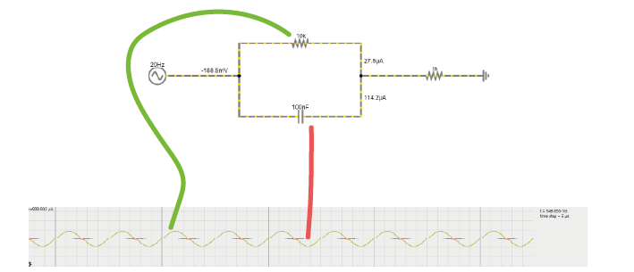
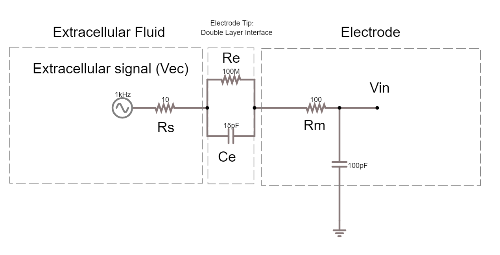
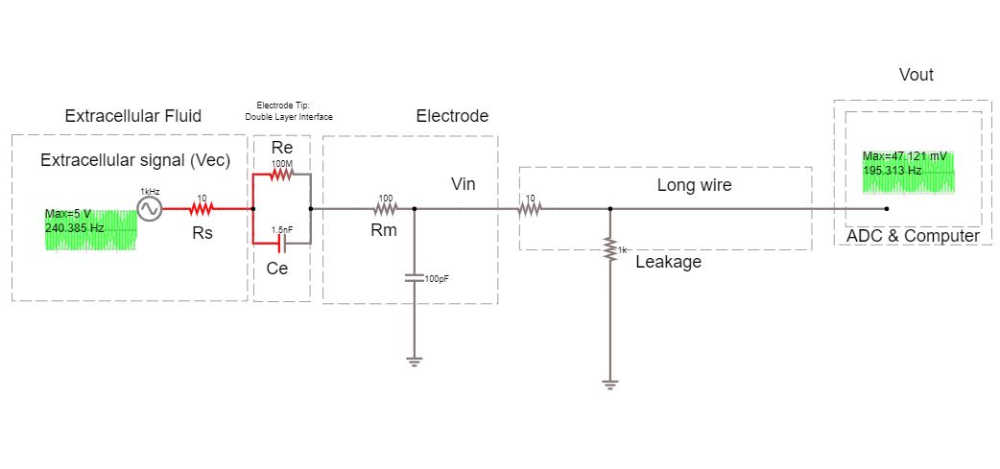
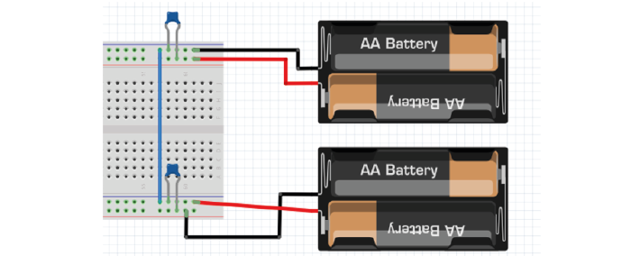
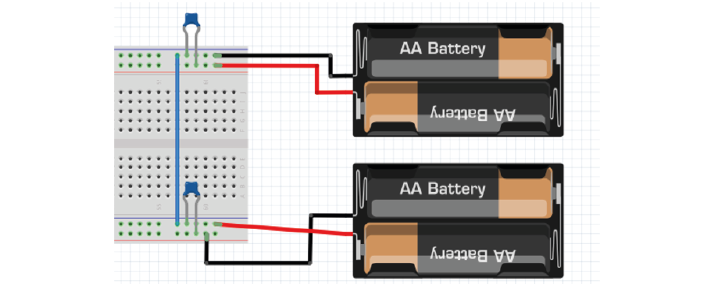
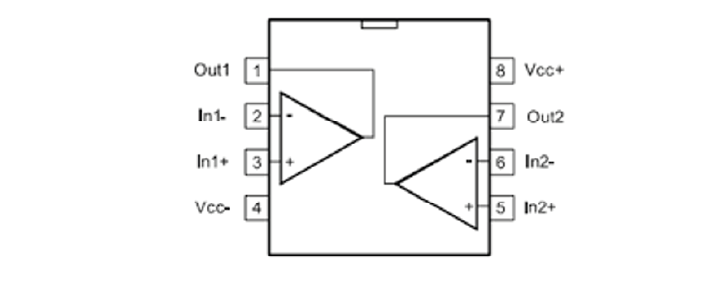
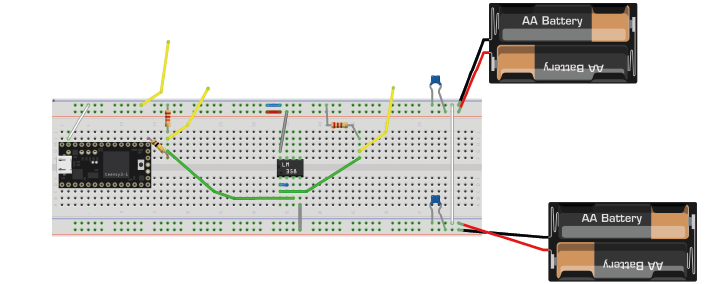
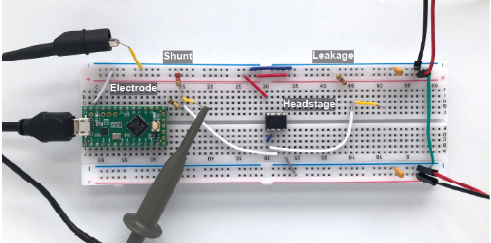

Exercises Day 2#
1. Capacitor and Resistor in parallel#
In the circuit below, you will see a capacitor and a resistor in parallel. The voltage source alternates at 20Hz, going from -10 to +10 volts. The current travels over the resistor or via the capacitor to ground.
1A. Increase the value of the resistor to 200kOhm. What happens to the current through the resistor?
1B. Put the resistor back to 10kOhm. Now, increase the capacitance of the capacitor to around 10mF. What happens to the current?
1C. Return the values to 10kOhm and 100nF.
Change the frequency of the alternating signal to
1000 Hz (action potentials!)
then to 1 Hz
You may have to change the simulation speed using the red slider at the top right, and adjust the x-scaling of the scope below (right-click / properties / and slide the ‘horizontal scale’).
How does the frequency of the signal relate to how much current crosses either the capacitor or the resistor?
2. The equivalent circuit of the electrode#
In the theory handout, we discussed how we can represent an electrode as a circuit containing a resistance and a capacitance. We’ll now build this equivalent circuit in the simulator.
2A. In the simulator, edit the circuit used above to build the equivalent circuit of a polarised, tungsten electrode. See the theory handout for more details.
Here are some values to use:
Rm: the DC resistance of the metal electrode wire, 10-100 Ohms.
Ce: the electrode tip capacitance, generated by the double layer generated around the electrode. Ce ~ 0.2 pF / µm2, so 10 - 20 pF (if the electrode is unplated)
Re: electrode tip resistance, in parallel with Ce. ~ 100 MOhm.
Edit the alternating voltage supply to provide 1V at 1Khz, mimicking the signal coming from your cell. 1V is larger than ephys signals, but makes the current flow easier to see. Change the sliders for simulation speed and current speed until you can see where the current is flowing.
2B. What happens if you delete the resistor Re?
2C. Bonus exercise: Can you change this circuit from a polarising, tungsten electrode, to a circuit representing a nonpolarizable electrode?
3. Shunt Impedance#
Here is the circuit of the electrode with a shunt impedance added of 100 pF:
3A. What is shunt impedance here?
3B. What % of our signal are we losing between Vec and Vin? Why?
3C. What could we change to increase the signal at Vin?
3D. The tips of certain electrodes, e.g. nichrome tetrodes, can be electroplated in a thin layer of gold. This ‘goldplating’ increases the surface area of the tip, creating more space to separate charge. This increases tip capacitance by around 100x. Make this change in the circuit simulator. How similar are Vec and Vin now?
Recording Circuit#
To actually perform a recording, we will have to attach the electrode to the rest of an acquisition system. The recording system has an analog to digital converter (ADC), and a recording computer. The leakage resistance here is where the recording system is connected to ground.
3E. How much of the voltage at the electrode, Vec, are we recording at Vout?
3F. Add a headstage to this circuit, by placing an ideal operational amplifier between the electrode and the long wire. What happens to Vout? Why?
3G. Change the circuit to stop the amplifier from saturating. What is the amplifier gain now?
4. Operational Amplifiers#
We will now build the same circuit on the breadboard. The Teensy ‘Blink’ signal will act as our neuronal data, that will travel across electrode and shunt impedances before reaching the oscilloscope to be recorded. Our goal is to get as much of the Blink signal as possible to reach our oscilloscope recording system.
In the theory handout, we discussed the importance of headstages. We’ll test that now, by building the recording circuit without and with an amplifier acting as a headstage.
‘Neuron’ = Digital blink output from Teensy
‘Electrode’ = 100 kOhm resistor
‘Shunt’ = 22kOhm resistor
‘Leak’ = 220Ohm resistor
‘Recording system’ = the Picoscope

4A. Recording circuit without an amplifier#
4A. Upload the Blink example to your teensy (File/Examples/Basics/Blink)(or just run it if still loaded).
Build the circuit below:
Send the Teensy output through a 100 KOhm resistor. This makes it behave a bit like a biological signal coming from an electrode.
A 22kOhm resistor to ground simulates shunt impedance.
A 220 Ohm resistor to ground simulates that your acquisition system is connected to ground (via some resistance).
The yellow wires are ‘readout’ wires to connect your oscilloscope to.
4B. Use the oscilloscope to measure the peak to peak voltage amplitude recorded at three points:
(+) Probe Location |
Circuit 1, without amplifier |
Circuit 2, with amplifier |
|---|---|---|
|
||
|
||
|
4C. How much signal is lost?
4B. Recording circuit with amplifier#
Build voltage rails#
Warning
Make sure that the pins from the batteries do not touch, and if they’re not in use, best to put some tape on them so they don’t touch things. ‘Short-circuiting’ the batteries (connecting them without any sort of resistance) causes a huge current to flow from the + to -, enough to… melt stuff.
We need to provide our op-amp with power. We will use batteries to make voltage ‘rails’. We are going to make a -3V and +3V rail. To do this we use a common trick and turn two regular power supplies into a bipolar power supply. In our case we use batteries, because they’re cheap and pretty much fully noise-free. Check which way up your breadboard is (keep the blue line at the top). Following the figures precisely will make debugging much easier later on.
4D. Connect the battery holders as follows:
The first pair of batteries provides +3V from the red wire (goes to red rail on breadboard), and 0 from the black wire (goes to blue rail on breadboard).
The two blue rails of the breadboard are connected through a wire, setting them both to 0V.
The second pair of batteries is reversed (red wire goes to blue rail, black wire to red rail). This provides -3V relative to ground.
Remember or label which side is +3 and which is -3
 

Add bypass capacitors#
Bypass capacitors are small capacitors that act like little secondary batteries. The batteries we use have a high ESR - ‘equivalent series resistance’, and some capacitance. This means that are not great at quickly providing current. Because of this, when our op-amp starts working, it can run out of current for a very short time until the battery can drive the rails back to their original voltage. This is bad for the signal quality.
So, we allow these small capacitors to charge. If the battery briefly can’t provide current, the bypass capacitors will discharge, providing quick back-up current. We’re exploiting the fact that these caps have very low ESR and can provide current pretty much instantaneously. The fact that they’re too small to power anything for more than a millisecond does not matter here, at that point the batteries have caught up.
4E. Add two 100nF (marked 104) caps, one to each rail, so connecting GND to 3V and connecting GND to -3V.
Add a ‘headstage’#
We will replace our long wire with a ‘headstage’. We will use only the most basic part of the headstage, an operational amplifier.
This is the op-amp you have. Make sure you’re looking at the op-amp (AS358P), not the instrumentation amp.
4F. Add the op-amp to the circuit.
Place the op-amp on your breadboard, with the semicircle cutout on the left.
Connect the +3 voltage rail to ‘Vcc+’ and the -3 voltage rail to ‘Vcc-‘
Put the electrode output wire into the + input of your op-amp, and the output of the op-amp into the ‘wire’ simulation circuit.
Feed the output of the op-amp, back into the – input.
4G. Now measure the same three points as before and complete the table in question 4B. -
4H. Optional: try changing the resistances you’ve used for electrode, shunt, and leakage. What happens to the signal?
4I. Optional: Measure the same points in the simulator as you did on the breadboard. How do they compare?
 